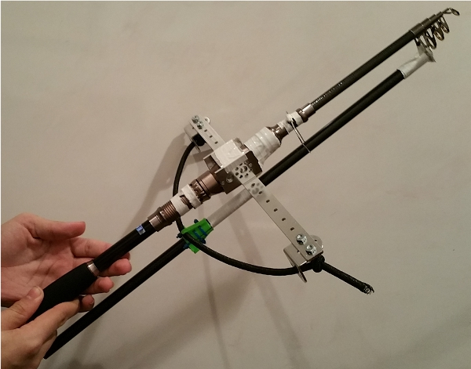

As the point values make clear, managing to get the robot to hang on the end of the "cliff" is likely worth the effort. As such, we've worked on making a strange grappling-hook type contraption to pull the robot up. This first version works rather like a crossbow. A telescoping fishing pole has its largest loop hooked up to a long "bolt" which extends beyond the pole to a bungee cord tied to a pair of arms on the sides of the fishing pole. A 3D-printed grip is attatched to the bolt, and allows it to socket into the bungee cord and be pulled back by a person. When pulled back and released, the bolt pushes the telescoping portion of the fishing pole, causing it to extend.
This part is by no means complete yet. There are 3 main issues to tackle before this can be considered finished. First is a trigger. As of yet, the bolt fires as soon as it is released, so we need a mechanism to hold the bungee taught until the robot is ready and in position to release it. The second issue is making a hook. The telescoping portion of the fishing pole hasn't been modified much yet, but we will need to put a hook of sorts on the tip of the pole. Instead of a more cliche three-pointed hook, the most likely solution for us will be something more like a carabiner, so that we can extend the hook directly towards the churro on the cliff and the hook will clasp around it with a spring-loaded bar. The third and final problem will be closing the gap. We have made a way to propel the pole up to the cliff, but we haven't made a way to pull the robot along after it. To solve this, we will probably just use a cable and a winch, like what is commonly on a fishing pole in the first place. This will likely involve tying one end of a string or fishing line to the hook, and then wrapping the other end around a spool on a DC motor mounted on the main chassis of the robot, so that reeling in the line will cause the telescoping fishing pole to collapse back down to its compacted length.